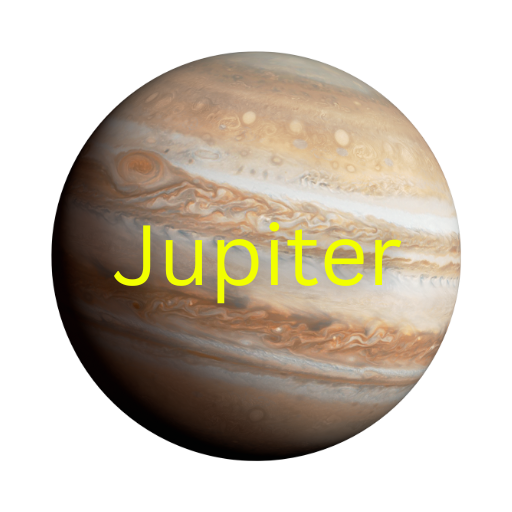

Jupiter is the largest planet in the solar system, a massive gas giant with a diameter over 11 times that of Earth and more than twice the mass of all the other planets combined. Composed primarily of hydrogen and helium, Jupiter has no solid surface, but its swirling clouds and bands of gas create stunning, colorful patterns across its atmosphere. The most famous of these features is the Great Red Spot, a giant storm larger than Earth that has been raging for at least 350 years. Jupiter’s immense gravity influences the orbits of many objects in the solar system and has helped shape the asteroid belt. It also has a powerful magnetic field, far stronger than Earth’s, and emits more heat than it receives from the Sun. Jupiter is orbited by at least 95 moons, including Ganymede, the largest moon in the solar system, as well as Europa, which may harbor a subsurface ocean beneath its icy crust, making it a key focus in the search for extraterrestrial life.